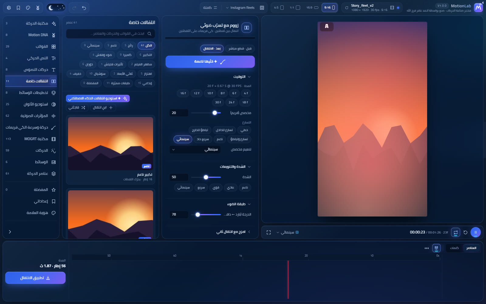

TRANSITIONS STUDIO
انتقالات حقيقية على كليباتك
30 انتقال (زووم، كاميرا، دوران، اهتزاز، قلب، تلاشي…) بتنكتب ككيفريمات على آخر الكليب الأول وأول الكليب الثاني — بدون حواف سودا.
- طبقات ضوء وفلاش وحرق فيلم وقليتش فوق القطع
- مازج انتقالات، وتطبيق على كل القطعات المحددة بضغطة
- نسخ ولصق الانتقال، و«ابنِ انتقالك»